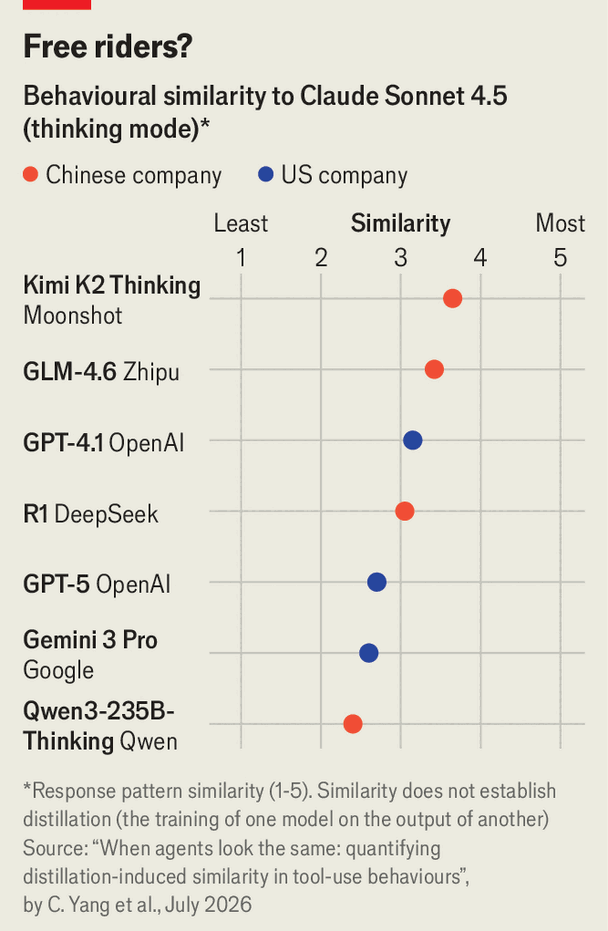

China increasingly depends on copying American AI
Model distillation infuriates America, but may end up holding China back
Oct 29th 2026
Consider a water-skier. Surfing in the wake of a speedboat, they may at times go faster than the vessel pulling them along—but they never overtake it. Lately some experts have turned to this analogy to describe China’s race with America for supremacy in artificial intelligence. They suggest that the impressive progress of Chinese labs largely relies on the pace of their American peers pushing out the frontier. If America speeds up, so might China. If America were to throttle down, Chinese labs would slow too.
The reason is “distillation”: the training of an AI model on the output of another, rather than from scratch. As ai becomes more capable, the extent to which Chinese firms are distilling the best American models has become an urgent question. America’s companies need users to pay for their expensive models rather than use cheap knock-offs. And America wants to stay far ahead of China: President Donald Trump has said that “Whoever wins AI, wins.” Yet the widespread distillation of frontier AI models may not be quite as bad for America, nor as good for China, as it seems.
The idea of distillation is simple. In the early stages of training, large language models (LLMs) are usually taught to mimic text on the internet. Distillation teaches them instead to mimic other LLMs. The words generated by American models exhibit precisely the sorts of skills and reasoning Chinese developers want their own models to learn. As such, their output is useful fodder for training.
American developers on the frontier have no more advanced models to distil, and the text on the internet is all but exhausted. They instead increasingly rely on a less efficient technique called reinforcement learning (RL). It involves setting a goal for their model, such as solving a complex maths problem, and letting it experiment in search of a solution. American firms now spend more than half of their computing resources on RL-related techniques, up from a twentieth in early 2024.
Chinese firms can thus distil the capabilities that American models learn through expensive RL training. Like a student with a tutor, their AIs learn faster than American ones working things out alone. A small model trained by DeepSeek, a Chinese lab, on 800,000 examples produced by their most powerful model went from a score of 15% to 46% on a popular mathematics test, according to a study published in the Findings of the Association for Computational Linguistics in July.
Far more data are needed to match the capabilities of frontier models—but Chinese labs appear to be distilling at scale. A report published in September by Anthropic found that five Chinese firms had collected more than 180m messages from its models in five months. Chinese models bear a measurable resemblance to American ones (see chart), and sometimes even identify themselves as Claude or ChatGPT.

How much does distillation matter? Much of China’s progress in ai is homegrown. More than half the world’s top AI researchers are of Chinese origin, as measured by papers presented at NeurIPS, the main global AI conference. But brainpower goes only so far. Advanced computer chips are today the main driver of AI progress, and America’s tech giants individually have more than all of their Chinese competitors combined. Distillation helps Chinese firms compensate. Researchers reckon Chinese AI is about three to six months behind the best American models. Without distillation the gap could almost double, estimates Saif Khan of the Centre for Technology & Statecraft in Washington.
Anthropic and OpenAI are keen to cut the rope. They have moved to end an exploit, found in August, that gives Chinese firms access to the reasoning that their models produce while solving problems. They have also stepped up their detection of distillation campaigns. Anthropic has begun charging for Claude requests even if the model senses what is going on and refuses to respond—making failed attempts at distillation costly.
Anthropic has said these new measures may not be lastingly effective, but have so far reduced the amount of data harvested by distillers by 90-99%. As a result it might give up about 5-7% of its revenue; distillers are still users, after all. The company argues that Chinese model-makers were releasing near-frontier models without guardrails against misuse, and that such models posed a national-security risk.
Yet, if they succeed, American labs may come to regret closing off access to their rivals. Chinese researchers have their doubts about the wisdom of relying on distillation. Few believe that training on American models is ethically wrong—frontier labs built their own systems on freely obtained internet data. But some bosses think that relying on the technique will condemn China to permanent second-place. Researchers at Chinese labs further suggest that, if it happens, recursive self-improvement—AI models that autonomously build their own successors—may rely on sophisticated RL infrastructure which distillers will not have.
Zhang Yiming, the founder of ByteDance, a Chinese internet firm, told his staff in July that the company would not use distillation to soup up its models. LatePost, a Chinese tech blog, paraphrased Mr Zhang’s comments, saying that distillation “will, at best, allow us to continually close the gap [with the frontier], but it will be difficult to truly surpass”. Mr Zhang acknowledged that letting go of the cord that tethers Chinese progress to the American frontier was leading ByteDance to fall behind. But the firm, unlike some of its rivals in China, has other streams of revenue and can afford to offer inferior models while it becomes more self-sufficient.
As for America, distillation is an annoyance, but may be better than Chinese firms skiing their own way to the frontier. The technique could make it easier to regulate ai, too. Mr Trump’s administration has been reluctant to slow down the progress of AI while it is made safer, lest America hand the competitive advantage to China. But if China is like a water-skier, it might not overtake even a slowing towboat. ■
Subscribers can sign up to Drum Tower, our new weekly newsletter, to understand what the world makes of China—and what China makes of the world.